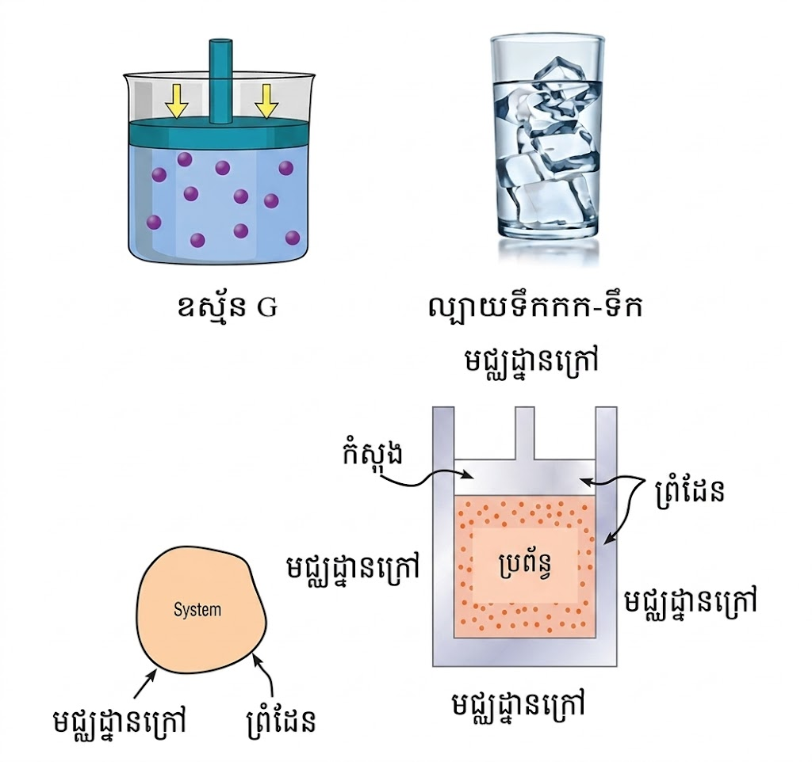
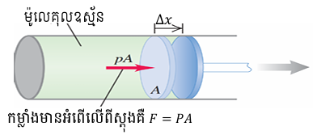
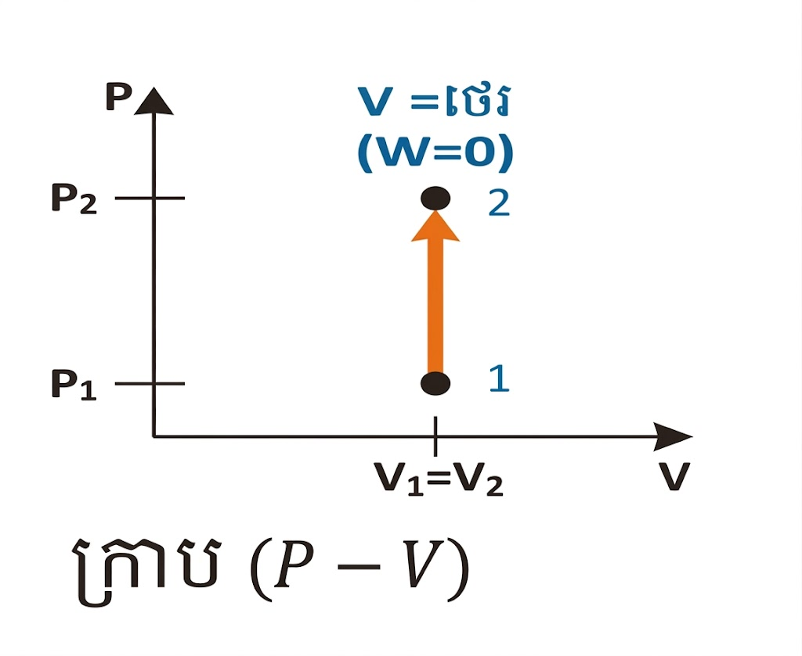
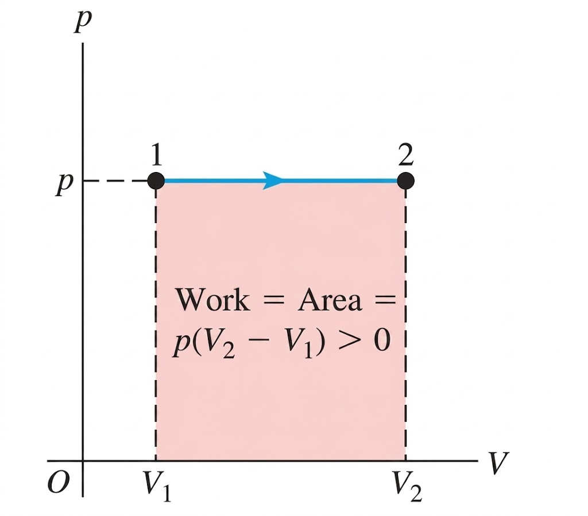
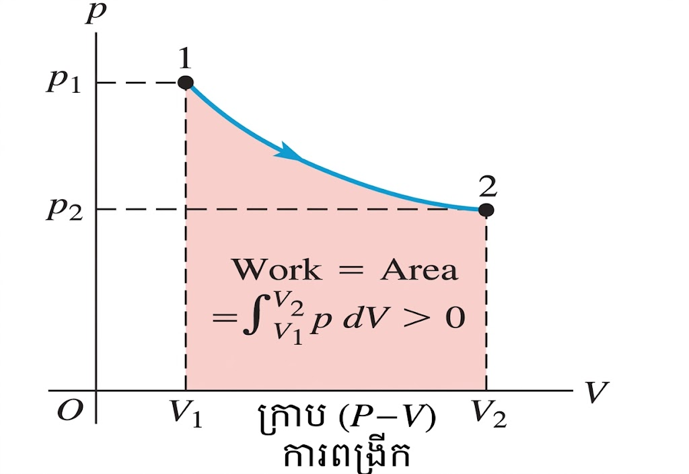
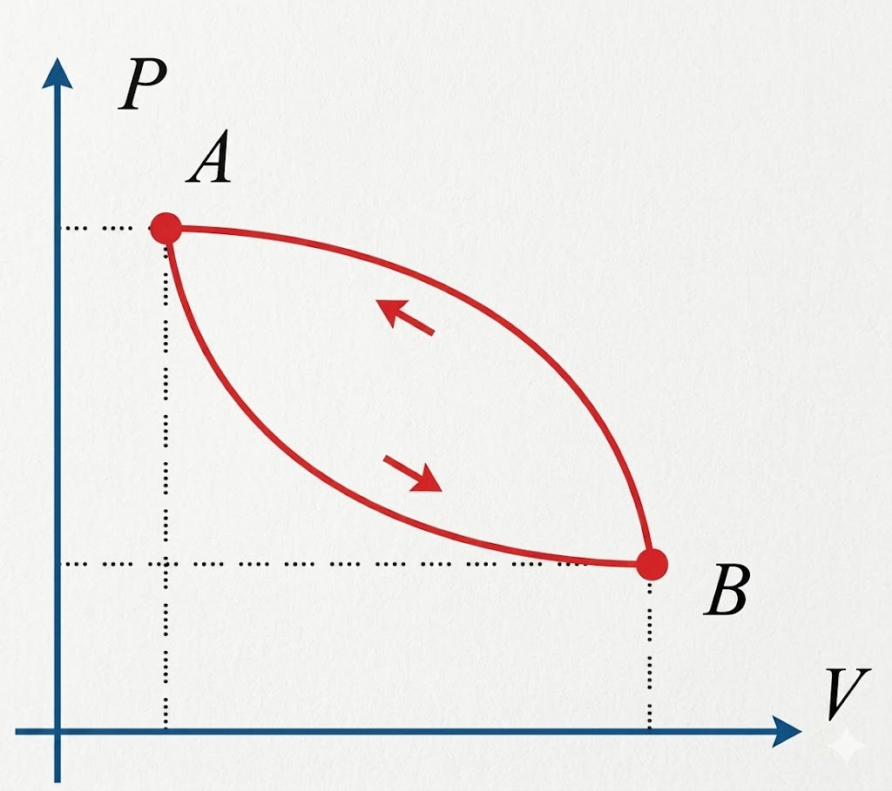

១. ប្រព័ន្ធទែម៉ូឌីណាមិច
ប្រព័ន្ធ ៖ ជាវត្ថុឬជាសំណុំវត្ថុដែលលើកយកមកសិក្សា (ឧទាហរណ៍ ៖ ឧស្ម័នក្នុងស៊ីឡាំង)។ វត្ថុដទៃទៀតក្រៅពីប្រព័ន្ធ គេហៅថា មជ្ឈដ្ឋានខាងក្រៅ។
បម្លែងទែម៉ូឌីណាមិច ៖ ជាបម្រែបម្រួលភាពនៃឧស្ម័ន (មាឌ សម្ពាធ ឬសីតុណ្ហភាព) ពីភាពដើមទៅភាពស្រេច។

ប្រភេទនៃបម្លែង ៖
បម្លែងបិទ ៖ ជាបម្លែងដែលមានភាពស្រេចត្រឡប់មកដូចភាពដើមវិញ (ខ្សែបិទជិត)។
បម្លែងចំហ ៖ ជាបម្លែងដែលមានភាពស្រេចខុសពីភាពដើម។
២. កម្មន្ត (Work)
កម្មន្ត ជាផលគុណរវាងកម្លាំង \( F \) ជាមួយបម្លាស់ទី \( \Delta x \) ។
ដែល :
ឧបមាថា គេមានស៊ីឡាំងមួយមានផ្ទុកម៉ូលេគុលឧស្ម័ន និងពីស្តុងមួយអាចចល័តបាន (ដូចរូប)។

នៅពេលដែលម៉ូលេគុលឧស្ម័នផ្លាស់ប្ដូរភាពធ្វើឱ្យវាប្រែប្រួលមាឌ ដែលធ្វើឱ្យពីស្តុងចល័តក្រោមឥទ្ធិពលនៃកម្លាំង \( F \) វាផ្លាស់ទីបានប្រវែង \( \Delta x \) ។
លំនាំអុីសូករ ជាលំនាំមួយដែលមានមាឌថេរ។


តាមក្រាប \( (P - V) \) ដូចរូបគឺជាលំនាំអុីសូបារ ដែលមានសម្ពាធថេរ \( P_1 = P_2 = P \) ។
យើងឃើញថាផ្ទៃក្រឡាក្រោមខ្សែក្រាបពី \( V_1 \rightarrow V_2 \) គឺមានរាងជាចតុកោណកែង។
ដូចនេះកម្មន្តក្នុងលំនាំអុីសូបារគឺ ៖
ដែល ៖
តាមក្រាប \( (P - V) \) នៃលំនាំអុីសូទែម (សីតុណ្ហភាពថេរ) យើងឃើញថានៅពេលសម្ពាធប្រែប្រួលពី \( P_1 \rightarrow P_2 \) នោះមាឌក៏ប្រែប្រួលពី \( V_1 \rightarrow V_2 \) ដែរ។

កម្មន្តក្នុងលំនាំអុីសូទែមគឺ ៖
ដែល ៖
៣. ច្បាប់ទី១ នៃទែម៉ូឌីណាមិច
ច្បាប់ទី១ នៃទែម៉ូឌីណាមិច ពោលថាកម្ដៅស្រូបដោយប្រព័ន្ធស្មើនឹងផលបូកកម្មន្តដែលធ្វើដោយប្រព័ន្ធ និងការប្រែប្រួលថាមពលក្នុងនៃប្រព័ន្ធ។
កាលណាប្រព័ន្ធស្រូបឬទទួលកម្ដៅនោះ ៖ \( Q > 0 \) (សញ្ញា +)
កាលណាប្រព័ន្ធបញ្ចេញឬបំភាយកម្ដៅនោះ ៖ \( Q < 0 \) (សញ្ញា -)
កាលណាប្រព័ន្ធរងនូវបម្លែងលំនាំអាដ្យាបាទិចនោះ ៖ \( Q = 0 \)
កាលណាប្រែប្រួលថាមពលក្នុងកើនឡើងនោះ ៖ \( \Delta U > 0 \) (សញ្ញា +)
កាលណាប្រែប្រួលថាមពលក្នុងថយចុះនោះ ៖ \( \Delta U < 0 \) (សញ្ញា -)
កាលណាប្រព័ន្ធរងនូវបម្លែងលំនាំអុីសូទែមនោះ ៖ \( \Delta U = 0 \)
កាលណាប្រព័ន្ធធ្វើកម្មន្តឬបំពេញកម្មន្តឬបញ្ចេញកម្មន្តនោះ ៖ \( W > 0 \) (សញ្ញា +)
កាលណាប្រព័ន្ធទទួលរងកម្មន្តឬទទួលកម្មន្តធ្វើលើប្រព័ន្ធនោះ ៖ \( W < 0 \) (សញ្ញា -)
កាលណាប្រព័ន្ធរងនូវបម្លែងលំនាំអុីសូករនោះ ៖ \( W = 0 \)
លំនាំអាដ្យាបាទិច (Adiabatic Process) ៖
ជាលំនាំមួយដែលគ្មានការប្តូរកម្ដៅជាមួយមជ្ឈដ្ឋានខាងក្រៅ (\( Q = 0 \))។
តាមច្បាប់ទី១ ៖ \( Q = \Delta U + W \) ដោយ \( Q = 0 \) នាំឱ្យ ៖
៤. ថាមពលក្នុងនៃឧស្ម័នបរិសុទ្ធ
ថាមពលក្នុងនៃឧស្ម័នបរិសុទ្ធ ជាថាមពលស៊ីនេទិចសរុបនៃឧស្ម័ន។
៥. ករណីបម្លែងបិទ - គោលការណ៍សមមូល
ពំនោល គោលការណ៍សមមូលកាលណា ប្រព័ន្ធមួយទទួលបម្លែងបិទ (ធ្វើមួយសុិច) ដោយប្តូរតែ កម្មន្ត និងកម្តៅជាមួយមជ្ឈដ្ឋានខាងក្រៅ ។

៦. លំនាំអុីសូករ
លំនាំអ៊ីសូករ ជាលំនាំដែលមានមាឌនៃប្រព័ន្ធក្នុងបម្លែងទែម៉ូឌីណាមិចមានតម្លៃថេរ ។
អនុវត្តតាមច្បាប់ទី១ នៃថែម៉ូឌីណាមិច គឺ Q = W + ΔU
យេីងបាន :
| លំនាំ | លក្ខណៈបស់លំនាំ | លទ្ធផល |
|---|---|---|
| អាដ្យាបាទិច | Q = 0 | ΔU = −W |
| អ៊ីសូករ | W = 0 | ΔU = Q |
| អ៊ីសូទែមឬបម្លែងបិទ | ΔU = 0 | Q = W |